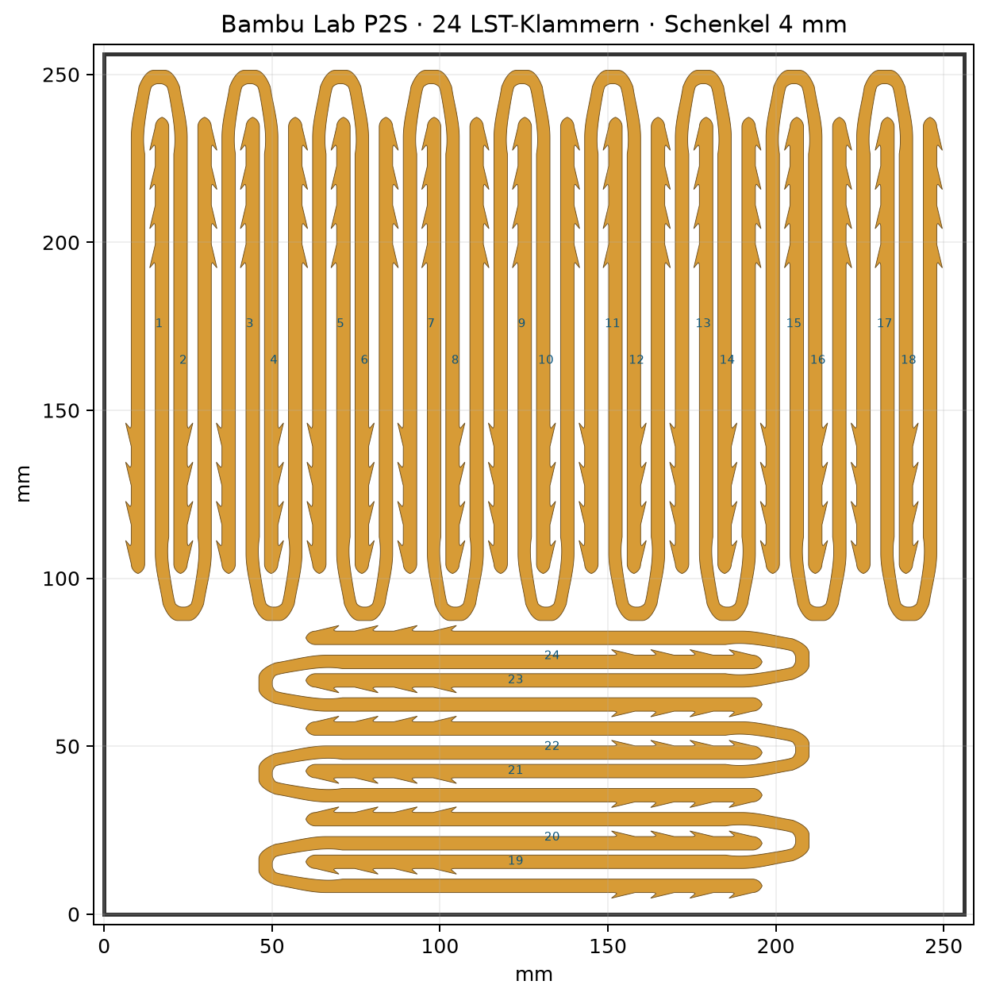

P-00124× PLATEGROW / FÜHRUNG
GEOMETRIE OKLST-Klammer 4 mm
Verstärkte Klammer mit 4-mm-Schenkeln. Die 24er-Platte ist für eine 256 × 256-mm-Druckfläche angeordnet; STL und komplette Druckplatte liegen direkt bereit.
- Teile
- 24
- Bauteil
- 20 × 149,83 × 4 mm
- Materialprofil
- Generic PLA Silk
- Schicht
- 0,20 mm
STL3MFZIPJSON
Remix-Basis: extrawitz. Original-Lizenzangaben bleiben in den Quelldateien erhalten.